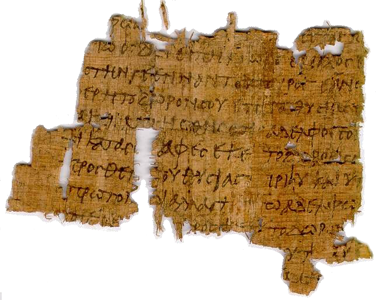

Sfoglia il catalogo di risorse Epyrus.


RISORSE PAPIROLOGICHE
Epyrus è un catalogo digitale che aggrega e permette l’accesso a una suite di risorse digitali disponibili e consultabili online utili alla ricerca negli ambiti della Papirologia e dell’Epigrafia.
| Risorse | Descrizioni | |
|---|---|---|
| Année Epigraphique | Sito di carattere informativo. | |
| Association International d’Èpigraphie Grecque et Latine (AIEGL) | Il sito ufficiale dell'associazione, con informazioni sulle sue attività. | |
| Bulletin Epigraphique | Sito di carattere informativo. | |
| CIL Open Access | Possibilità di sfogliare e scaricare tutti i volumi editi prima del 1940. | |
| Claros: Concordancia de Inscripciones griegas | Un utilissimo strumento preparato nell’ambito del Dicionario Griego-Español, consente di rintracciare rapidamente le riedizioni delle iscrizioni greche. | |
| Corpus Inscriptionum Latinarum | Riprende sistematicamente tutte le immagini disponibili delle iscrizioni edite nei fascicoli di CIL II2 (non tutte presenti nei fascicoli cartacei). Da notare l’integrazione con le schede e i testi delle epigrafi inclusi in EDH. | |
| C. Rouechè, Aphrodisias in the Late Antiquity | Riedizione digitale di C. Roueché, Aphrodisias in Late Antiquity, London 1989: la storia di una città tardoantica della Caria attraverso le sue iscrizioni. | |
| Corpus Inscriptionum Latinarum | Non solo un sito di carattere informativo: interessanti materiali di corredo, in particolare schede con foto e rimandi alla bibliografia; addenda e corrigenda; indici; concordanze. | |
| EAGLE | Ambizioso progetto per la ripresa e il superamento dei svariati progetti degli anni ‘90: creazione di un database complessivo dei testi greci e latini anteriori al VII sec. d.C. | |
| Epigraphic Database Roma | Banca dati dedicata alle iscrizioni latine di Roma (escluse le iscrizioni cristiane) e dell’Italia, per un totale di circa 80 mila testi e anche 52 mila immagini circa. | |
| Epigraphik Datenbank Clauss-Slaby | La più completa banca dati dell’epigrafia latina, comprende a oggi circa i testi di oltre 500 mila iscrizioni e circa 112 mila immagini. | |
| Imaging Projects del Centre for the Study of Ancient Documents | Images of Inscriptions Il progetto di maggior interesse, conserva le immagini di centinaia di calchi di epigrafi greche conservate a Oxford. Images from the Cox Archive Un’anteprima dell’archivio fotografico relativo alle spedizioni archeologiche di Christopher Cox in Frigia (1925-1926). Laconia Survey Inscriptions Piccolo archivio fotografico relativo alle campagne di indagine condotte nella regione tra il 1983 e il 1989 dalla British School at Athens. | |
| Inscriptiones Grecae | Sito di carattere informatico con alcune traduzioni in tedesco di testi chiave e utili concordanze IG=>SEG. | |
| J. Reynolds – C. Roueché – G. Bodard, Inscriptions of Aphrodisias | Progetto posteriore al precedente e di più ampio respiro: Riprende la totalità dei testi inediti ritrovati tra il 1961 e il 1994 e la quasi totalità dei testi editi fino al 1994: circa 1.500 testi tra il II sec. a.C. e i VII sec. d.C. | |
| Saxa loquuntur | Un buon repertorio degli strumenti digitali per lo studio delle iscrizioni greche e latine, a cura di O.Van Nijf. | |
| Searchable Greek Inscriptions | Possibilità di sfogliare il corpus seguendo l’ordine geografico o la sede di pubblicazione. Possibilità di effettuare ricerche lessicali sull’intero corpus o su una delle grandi suddivisioni geografiche del mondo greco (non con tutti i browsers). Presenza di essenziali dati di contesto: luogo di provenienza, datazione, edizione di riferimento, altre edizioni rilevanti. | |
| Supplementum Epigraphicum Graecum | Versione digitale di tutti i volumi editi, con possibilità di eseguire ricerche per numero dell'iscrizione, località, regione, per voci di indice e per concordanze. | |
| U.S. Epigraphy Project | Repertorio delle iscrizioni latine e greche conservate negli Stati Uniti, riprende e aggiorna J. Bodel - S. Tracy, Greek and Latin Inscriptions in the USA: a Checklist, Rome 1997. |
| Risorse | Descrizioni | |
|---|---|---|
| Association International de Papyrologues | Informazioni sulle attività dell’associazione, ma anche una eccellente raccolta di links. | |
| Bibliographie Papyrologique | Una storica bibliografia nata nel 1932, a cura dell’Association Égyptologique Reine Élisabeth. | |
| Catalogue of Paraliterary Papyri | Una tipologia di testi in genere prodotti dall’ambiente scolastico: cataloghi, commenti, esercizi, parafrasi, riassunti, hypotheseis. Per la loro natura di confine finiscono per essere ignorati sia dalle banche letterarie che da quelle documentarie. | |
| CeDoPaL | Il Centre de Documentation de Papyrologie Littéraire dell’Università di Liegi cura l’aggiornamento al catalogo dei papiri letterari di Pack: Catalogue des papyrus littéraires grecs et latins o Mertens-Pack3 (a cura di P. Mertens). | |
| Chartae Latinae Antiquiores on line | Un repertorio che consente ricerche per materiale di supporto, tipologia del documento, luogo di esecuzione, datazione, nome e titolo dello scriba, volume delle ChLA, nazione, città e luogo di conservazione. | |
| Checklist of Editions of Greek and Latin Papyri, Ostraca and Tablets | Un repertorio bibliografico delle monografie in cui appaiono edizioni di papiri, con le sigle comunemente usate. Un repertorio non completo per i testi letterari. | |
| Digital Papyrology | Particolarmente dedicato agli strumenti digitali per la disciplina. | |
| Heidelberger Gesamtverzeichnis der griechischen Papyrusurkunden Ägyptens | Una banca dati il cui scopo principale è di consentire ricerche cronologiche sul corpus dei papiri documentari. | |
| Österreichisches Nationalbibliothek: Papyrussammlung | Il sito dell’immensa collezione viennese, con circa 180 mila documenti egiziani (dall’età faraonica a quella araba). Una banca dati ricercabile per i materiali editi, con schede catalografiche e immagini. | |
| Papyri.info | Attraverso uno speciale motore di ricerca (Papyrological Navigator) consente di accedere contemporaneamente e in modo integrato alle banche dati dell’Advanced Papyrological Information System (non più attivo), della Duke Databank of Documentary Papyri, dell’Heidelberger Gesamtverzeichnis, di Trismegistos, della Bibliographie Papyrologique e dell’Arabic Papyrology Database. | |
| Photographic Archive of Papyri in the Cairo Museum | Un programma di digitalizzazione dell’ International Photographic Archive of Papyri sulla documentazione papiracea in greco del Museo Egizio del Cairo, archivio che conta circa 6 mila immagini. | |
| POxy: Oxyrhynchus Online | Sito dedicato all’enorme patrimonio papiraceo proveniente da Ossirinco, contiene un’eccellente introduzione alla documentazione. | |
| PSI Online | Il sito delle importanti collezioni dei Papiri della Società Italiana e dei Papiri delle Biblioteca Medicea Laurenziana. | |
| Scholia minora in Homerum | Offre descrizioni, edizioni e immagini dei papiri che presentano scolii all’Iliade e all’Odissea. | |
| The Leuven Database of Ancient Books | Una banca dati dedicata alle copie di opere letterarie su papiro in greco, latino, demotico e copto (la maggior parte delle quali note solo in frammenti), con riferimento ad oltre 15 mila testi. | |
| Trismegistos | Un portale sui testi documentari (papiracei ed epigrafici) dall’Egitto, fra l’800 a.C. e l’800 d.C. approntato presso la Katholieke Universiteit Leuven. | |
| What's New in Papyrology | Soprattutto dedicato ad annunci di nuove pubblicazioni e incontri di studio, ma anche con qualche novità sugli strumenti digitali. |